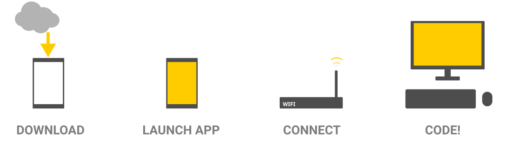

Protocoder is a creative programming environment for Android-based devices. It allows you to code rapidly from your computer using a WebIDE that resides in the Android-based device using WIFI. Code is rapidly executed using a Javascript virtual machine without having to go through slow compilation times.
Protocoder comes with a simplified programming API to do things ranging IoT, creative graphics, cool sounds though LibPd, and lots more
Install Protocoder in your Android device using a direct link from http://protocoder.org#download, F-droid (prefered) or Google Play.
During the first installation, Protocoder will ask you for some permissions (Android > 6), you can skip any of them except the Storage Access, which is necessary to install, save and load the examples and your future projects. Once installed, you can browse and execute any of the examples that come with it, just pressing on the icon project. You can see and modify the source code within the device pressing on Edit, inside the three-dots menu.

Most of the times, coding in this small devices is not very handy, thats why Protocoder has a built-in Editor (WebIDE) that you can access from your computer. To start using the WebIDE, make sure that both your laptop and Android device are connected to the same WIFI network. If you've done that, you will see an IP address written in the Android Protocoder App.
Take that IP address, type it in your modern computer browser et voilà.
You can start playing around now!
Protocoder comes with a fairly wide API to cover different use cases. At this point there is not many tutorials out there and the API is changing gradually, so it is better to play with the examples that come with the app. There is a work in progress self contained documentation listing all the methods and their usage (not yet!).
If you find some strange behaviour, inconsistencies, bugs or missing methods, please file a bug report in Github.
Why did you start making Protocoder?
There is two main reasons for this:
1) I feel frustrated with all the waste we generate just buying and throwing away phones and around 5 years ago I started to use old Android phones for educational purposes. It worked quite good but the tools I had to quickly teach where a bit overwhelming for beginners. I made a bunch of different tools (way simpler than this) and organically started to turn out into Protocoder.
2) I find my self a "creative" kind of person, and I got really frustrated with the Android programming environments for doing quick stuff. Sometimes I had an idea and just setting up a new project with the normal Android tooling and the write-compile-wait-obverse-repeat cycle was really long for my type of working
Is it Protocoder suitable for beginners?
Yes and no.
Protocoder has a smooth start because you dont need to setup a complex environment in your computer. On the other side you still need to know basic programming (or learn with it) and things are still a bit buggy for coding newcomers that might get frustrated.
Do you think Protocoder is the ultimate Android programming tool?
No, there is so many great tools out there, just use whatever it works for you!
Can I compile my script into a full standalone APK?
Yes, but it's quite complicated ATM. You will need to setup the whole Android environment and more. (Soon guide) If you want to help on this it will be more than welcome.
How many hours have you been working on this?
Too many...
How can I contribute?
Why you take so long to answer in any communication channel?
This project is a hobby so I prefer to batch tasks and do them in a row. Im a bit nomad too, so sometimes I don't have internet access.
Why there isn't an API for Google Maps?
Google Maps depends on Google Play Services which are not open source, they don't work in some countries and I feel a bit uncertain about how they treat your privacy. So I prefer to include ONLY open source code and code that respect your privacy inside Protocoder.
How many people are involved?
At the moment just me, Victor but sometimes I get nice contributions from Jose Juan.